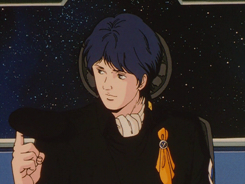

05 July 2026
Yang Wen-li
Reflections on one of my favorite fictional character.

Yang Wen-li is a character from the anime Legend of the Galactic Heroes. If you've seen my GitHub profile, you've probably already seen him as he's the character in my profile picture.
When I decided to add a blog to this website, I wasn't sure what my first post should be about. Since this site is mainly a portfolio, I have plenty of technical topics I could write about: machine learning, software engineering, interesting pieces of data I discovered or the projects I've worked on.
But for my first post, I wanted to write about something more personal. Something that has influenced the way I think, rather than simply documenting what I've built.
That naturally led me to Yang Wen-li.
It might seem strange to write about an anime character on a professional website. Personally, I don't think it is. The stories we connect with often reveal just as much about us as our careers or technical achievements. Some books, films, or characters stay with us long after we've finished them, quietly shaping the way we see the world.
For me, Yang Wen-li is one of those characters.
Legend of the Galactic Heroes, written by Yoshiki Tanaka, is a Japanese science fiction epic set thousands of years in the future, where humanity has spread across the galaxy. Two superpowers dominate human civilization: the autocratic Galactic Empire largely inspired by various European empires spanning from the Roman Empire to the relatively recent German Nazi Empire and the democratic Free Planets Alliance which is an imperfect modern liberal democracy archetype (as most modern democracies are).
Although the series contains spectacular space battles, it's much more than a military story. It explores politics, history, philosophy, human psychology, all set against the backdrop of sweeping orchestral waltzes.
At the heart of the story are two extraordinary individuals: Yang Wen-li and Reinhard von Lohengramm.
Reinhard is a military genius with enormous ambition. His dream is to overthrow the corrupt aristocracy of the Galactic Empire and unify humanity under his rule. He's less ideologically motivated he is largely driven by personal ambitions fueled by his various interpersonal relationships that he comes accross in the story.
Yang, on the other hand, couldn't be more different. He has no interest in political power or becoming a national hero.
His ideal future is surprisingly ordinary—to retire early, spend his days reading history books, and enjoy a quiet life with the people he cares about.
He quite literally enrolled in the military only to get free tuition for university and accidentally started rising to power as he was the last living
rear admiral in the first episode.
However despite his reluctance, the show clearly emphasizes his deep ideological convictions in his belief in democracy.
One quote stuck with me in one of the later episodes of the show in a conversation with Reinhard, his rival who he openly admires and respects.
"The right to violate the rights of the people belong to the people".
What makes Yang such a fascinating character isn't really his intelligence or his intellectual capabilities, impressive as they are. It's his compassion and the relationships that define him. Unlike many military geniuses in fiction, Yang never allows strategy to overshadow the people he is fighting for. His victories matter not because they demonstrate his brilliance, but because they save lives.
This is reflected in the people closest to him. The death of his closest friend, Jessica Edwards, is one of the defining tragedies of his life and reinforces his belief that politics and war always carry a human cost. Later, his relationship with Frederica Greenhill provides him with something he had rarely allowed himself to imagine—a quiet, ordinary life beyond the battlefield. Even after becoming one of the galaxy's greatest admirals, Yang still dreams less about victory than about finally retiring with Frederica, reading history books in peace, whilst getting tipsy on scotch-infused coffee.
Equally important is his relationship with Julian Mintz. Yang is more than Julian's guardian; he becomes his mentor and, in many ways, the father figure Julian never truly had. Rather than molding Julian into a copy of himself, Yang teaches him how to think critically, question authority, and arrive at his own conclusions. He values independent judgment over blind obedience, a philosophy that extends from his personal relationships to his views on politics and democracy.
These relationships reveal who Yang really is. Beneath the reputation of a military genius is a remarkably ordinary man.
This post isn't meant to be a complete character analysis. Instead, I want to share why Yang Wen-li has remained one of my favorite fictional characters for so many years, and why I think his ideological convictions and personal relationships make him a compelling figure in the world of fiction. In an age where cynicism often dominates political discourse, Yang Wen-li serves as a reminder that integrity, empathy, and a commitment to one's own convictions can coexist with brilliance and success.